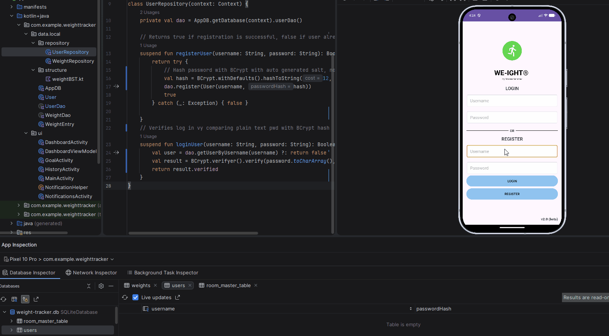
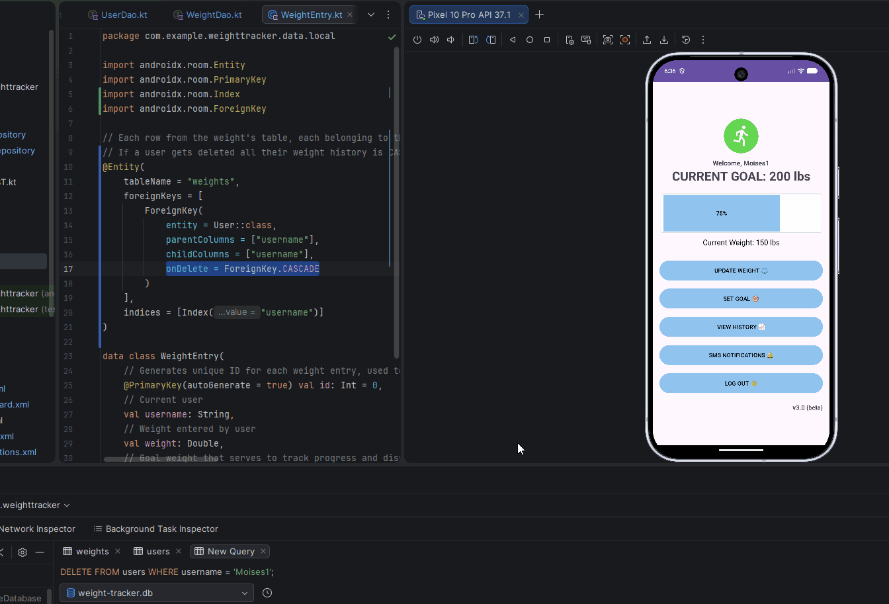

On this page
Artifact’s Origin
Artifact: CS360- Final project Weight Tracking App (Kotlin, XML, SQLite)
Developed on August 2026 for Mobile Architecture and Programming at SNHU
The application was developed as part of a project that required Android Studio environment. It’s original goal was to design an application that follows Android’s design foundations and best practices. The application’s core requirements were to provide CRUD operations and a trusted database, either local or online, where user data such as weight, username and passwords can be stored.
Justification
This enhancement improves my application by replacing the single SQLite from the original version that used plain text passwords, lacked foreign keys and indexes and allowed duplicate usernames. After refactoring to Room architecture, the application now ensures data integrity and security. The enhancement uses a natural primary key , and implements password hashing using at.favre.lib:bcrypt:0.10.2 with BCrypt.withDefaults() and BCrypt.verifyer() for login verification. Logic fixes such as getEntryByDate enforce one entry per day without blocking the option or allowing to overflow the database. The overall structure demonstrates trade-offs between slightly more complex Room/DAO logic versus significant gain in security and relational correctness.
Enhancement Steps
1. Refactoring data to normalized design using Room
In my previous enhancement I had already replaced the SQLiteOpenHelper with Room as my single source of truth. All UI modules now access data via ViewModel -> Repository -> DAO.
This can be found in my AppDB module:
@Database(entities = [User::class, WeightEntry::class], version = 1, exportSchema = false)
abstract class AppDB : RoomDatabase() {
// User access to user queries
abstract fun userDao(): UserDao
// User access to weight queries
abstract fun weightDao(): WeightDao
2. Creating a users table that includes username as the Primary Key
This step had also been performed in my previous enhancement for Software Engineering. This prevents duplicate registration, username_taken within MainActivity module reinforces duplicate handling:
Toast.makeText(this@MainActivity, getString(R.string.username_taken), Toast.LENGTH_SHORT).show()
Username set as the primary key
// User table that handles the "Welcome, user" feature I added
@Entity(tableName = "users")
data class User(
// Unique username set as primary key and for the welcome user feature
@PrimaryKey val username: String,
// Password storage for version 2 of the app
val password: String
)
And duplicate registration handling is found in UserDao.kt
// Insert new user to the database, ABORT if username already exists preventing duplicates
@Insert(onConflict = androidx.room.OnConflictStrategy.ABORT)
suspend fun register(user: User)
3. Implementation of password hashing
Currently, UserRepository.kt and UserDao.kt store the password exactly as the user types in in the registration form. This vulnerability uses plain text storage, if the Room database file is extracted, all usernames and passwords are exposed – failing the security requirements for an application. By using BCrypt, a user’s password is never stored, instead it becomes hashed and cannot be reverted back into plain text. It also auto generates random encryption for each user even if their username is the same. Finally, at log in, the user does BCrypt with plain text password while it stores as hash.
New dependencies added for password hashing:
implementation("androidx.room:room-runtime:2.6.1")
implementation("at.favre.lib:bcrypt:0.10.2")
Since the password will be hashed, the val passwordHash had to replace the existing val password within the User module:
@PrimaryKey val username: String,
// Password Hashing
val passwordHash: String
This new structure will now be querying by username rather than by password, the old method has been replaced with getUserByUsername:
@Dao
interface UserDao {
// Searches for the match username, handling null if credentials are wrong
@Query("SELECT * FROM users WHERE username = :username LIMIT 1")
suspend fun getUserByUsername(username: String): User?
UserRepository has been updated accordingly to hash passwords and verifying them against plain text from user’s login entry:
// Returns true if registration is successful, false if user already exists
suspend fun registerUser(username: String, password: String): Boolean {
return try {
// Hash password with BCrypt with auto generated salt, not reversible
val hash = BCrypt.withDefaults().hashToString(12, password.toCharArray())
dao.register(User(username, hash))
true
} catch (_: Exception) { false }
}
// Verifies log in vy comparing plain text pwd with BCrypt hash
suspend fun loginUser(username: String, password: String): Boolean {
val user = dao.getUserByUsername(username) ?: return false
val result = BCrypt.verifyer().verify(password.toCharArray(), user.passwordHash)
return result.verified
}
}
Passwords are now stored as BCrypt hashes with salt (one-way) instead of plain text, the following image shows the result:

Figure 7: Passwords stored as BCrypt Hash
Note
The artifact exposed user's passwords. This enhancement prevents reverse hashing so the application can securely store passwords without compromising user's personal data.
4. Creating a weight table using ForeignKey
The app now reinforces integrity between users and weights, so that every weight entry belongs to an existing user and deleting a user from the database will also delete their history. ForeignKey with CASCADE and index on username.
Parent table:
@Entity(tableName = "users")
data class User(
// Unique username set as primary key and for the welcome user feature
@PrimaryKey val username: String,
// Password Hashing
val passwordHash: String,
// Weight Goal
val goalWeight: Double = 0.0
)
Child table:
@Entity(
tableName = "weights",
foreignKeys = [
ForeignKey(
entity = User::class,
parentColumns = ["username"],
childColumns = ["username"],
onDelete = ForeignKey.CASCADE
)
],
indices = [Index("username")]
)
data class WeightEntry(
// Generates unique ID for each weight entry, used to identify records to delete
@PrimaryKey(autoGenerate = true) val id: Int = 0,
// Current user
val username: String,
// Weight entered by user
val weight: Double,
// Goal weight that serves to track progress and display history
val goalWeight: Double,
// Generate the date for the entry, used to be displayed in history
val date: String = java.text.SimpleDateFormat("MM/dd/yyyy", java.util.Locale.US).format(java.util.Date())
)
Updated database at version 3:
@Database(entities = [User::class, WeightEntry::class], version = 3, exportSchema = false)
abstract class AppDB : RoomDatabase() {
// User access to user queries
abstract fun userDao(): UserDao
// User access to weight queries
abstract fun weightDao(): WeightDao
// With companion object we only use a single db instance for the application
companion object {
// All instances are up to date
@Volatile
private var INSTANCE: AppDB? = null
// Retrieves database instance, and creates a db file if it doesn't exist yet
fun getDatabase(context: Context): AppDB {
return INSTANCE ?: synchronized(this) {
val instance = Room.databaseBuilder(
context.applicationContext,
AppDB::class.java,
"weight-tracker.db"
// Destroys old db and recreates with Foreign Key
).fallbackToDestructiveMigration().build()
INSTANCE = instance
instance
}
}
}
}

Figure 8: Deleting a username via ForeignKey
Additional features that apply Industry’s best practices
UI enhancements were added in to improve the overall presentation of this enhanced artifact, including using android and google icons for app compatibility, and gradient background for a more presentable look.
View my Enhancement Three Code on Github
Challenges
I. Goal Reach Notification. Even if progress was at 60%, the notification was called because current was bigger than goal , also showing every time I opened home. I adjusted the logic to trigger after a new weight is saved and check if progress == 100%, and avoided showing notification if the goal <= 0 on screen load.
II. Foreign Key crash. When adding a ForeignKey to weightEntry, the app froze and failed when inserting before login or with an empty username. I made sure to pass the logged in username from SharedPreferences and added a withContext and null-check before checking if the goal has been reached.
III. History showing 0.0. When I set an initial goal I was inserting WeightEntry = 0.0 as default, thus showing 0.0 and not allowing me to adjust unless the entry was deleted. By creating a new Dao method to updateAllGoals() that only does update weights without insert and adding a setGoal() in the viewmodel helped eliminate this vulnerability.
IV.History not showing all results. getAllEntries returned all rows from DB not filtered by user. I mitigated this by using queries where username =:username and used dao.getEntriesForUser(username) plus LiveData reload, proving Foreign Key implementation was successful.
V. App crash on inserting new weight. After adding multiple weighs for the same day, history got conflicted. I initially had this resolved but after refactoring the code for this enhancement I encountered this issue again. I added a getEntryByDate(username, today) check, therefore, if a user adds multiple weights in a day, in will overwrite existing weight rather than blocking the option or adding it to the database.
Outcomes
This enhancement implements a normalized database using Room with a primary key(id), foreign key(username referencing user table) and indexed queries, ensuring data integrity and improves performance by preventing full scan and duplicate rows. It also implements security best practices by hashing passwords with BCrypt before storage and enforce foreign fey constraints to prevent unauthorized access. I also evaluate databases solutions by demonstrating the use of industry tools such as Room, DAO and SQLite and protecting user information prior to deployment, overall ensuring passwords don’t get stored in plain text and that each weight record is associated to a user.
Overall, the updated version of this artifact prevents data extraction by using BCrypt hashing, prevents crashes by allowing the user to modify current weight data, maintains previous enhancements, and upgrades the User Interface to follow Android's best practices.